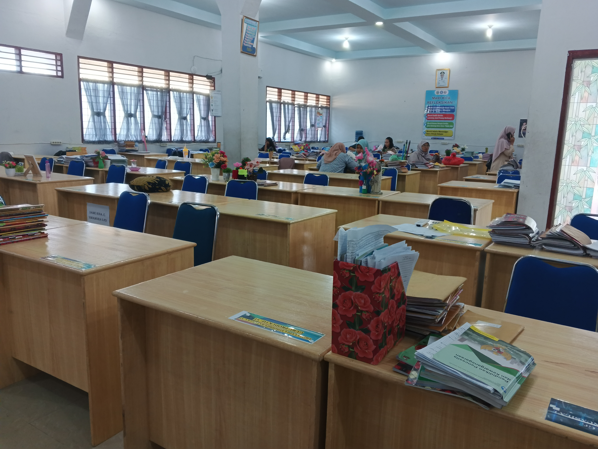
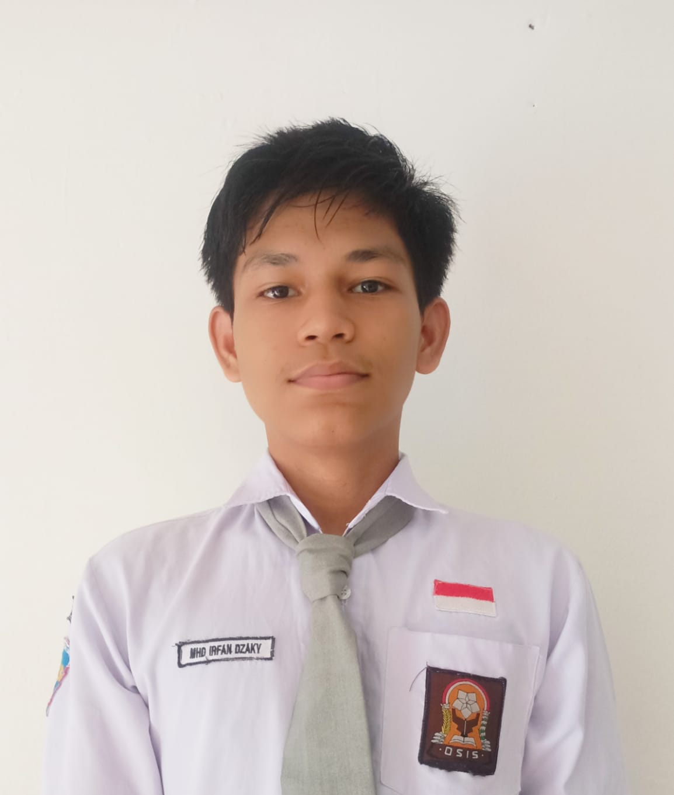

About
Sekolah
SMK Negeri 9
adalah sebuah lembaga pendidikan menengah kejuruan yang berdedikasi untuk membentuk generasi muda yang kompeten dan siap bersaing di dunia industri. Terletak di Jl. Patriot No. 20 A Lalang Kec. Medan Sunggal Kota Medan.
adalah sebuah lembaga pendidikan menengah kejuruan yang berdedikasi untuk membentuk generasi muda yang kompeten dan siap bersaing di dunia industri. Terletak di Jl. Patriot No. 20 A Lalang Kec. Medan Sunggal Kota Medan.


Galery
PERPUSTAKAAN

LAB BCF

AULA

KANTOR GURU

KEBUN BINATANG

KANTIN

Lokasi
SMK Negeri 9 Medan, Jl. Patriot No. 20 A Lalang Kec. Medan Sunggal
Kota Medan, Sumatera Utara
About Me

M.Irfan Dzaky
"Saya adalah seorang Front-End Developer"